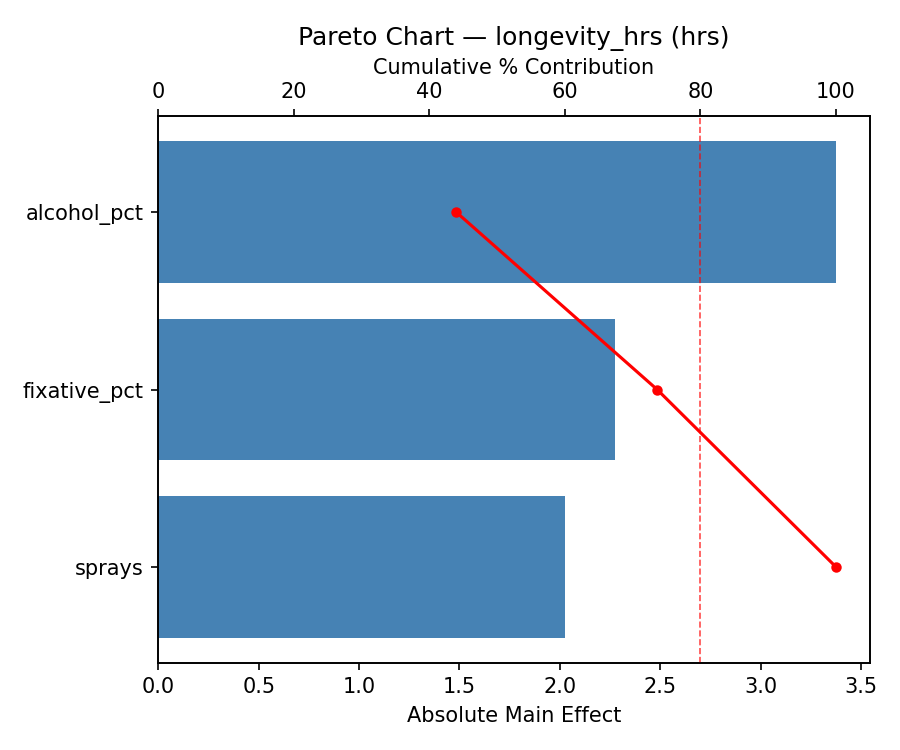
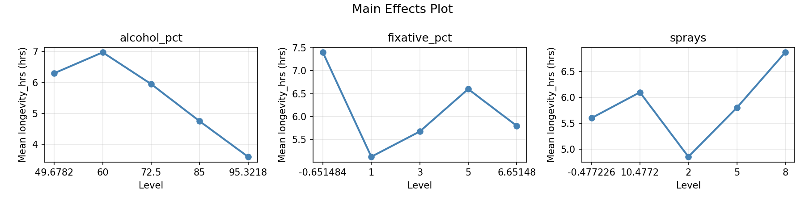
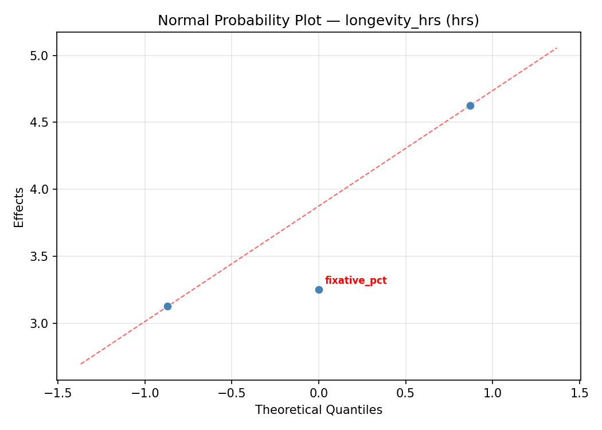
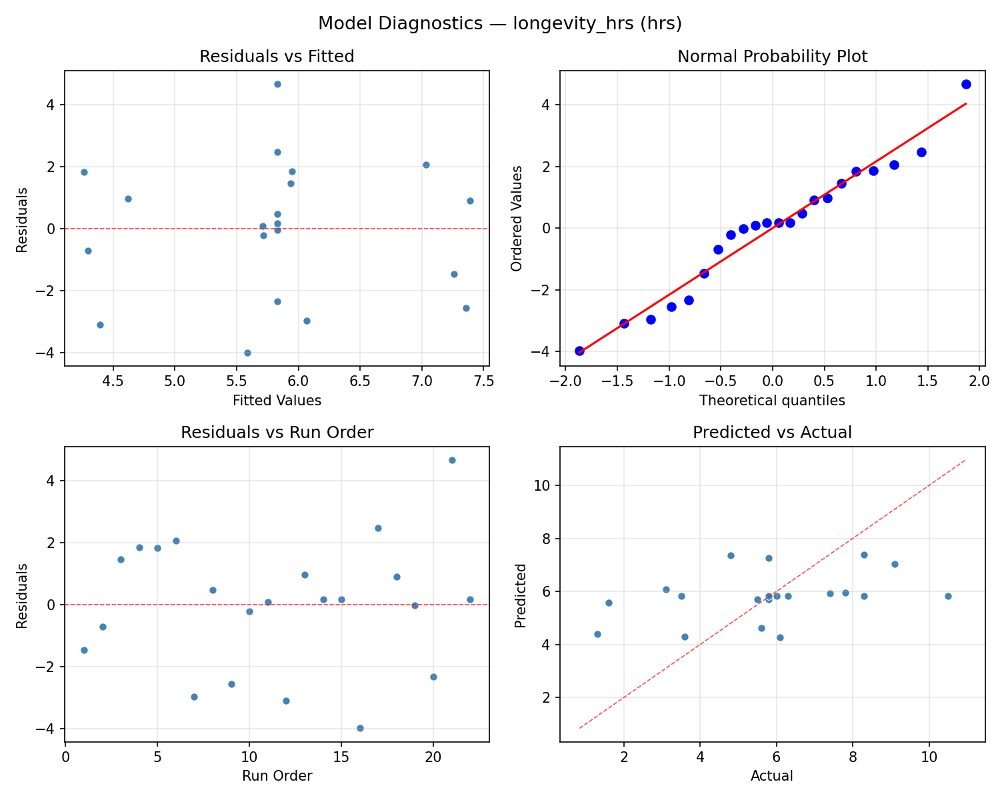
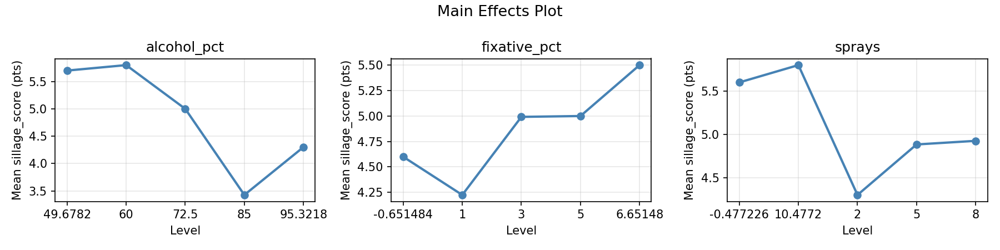
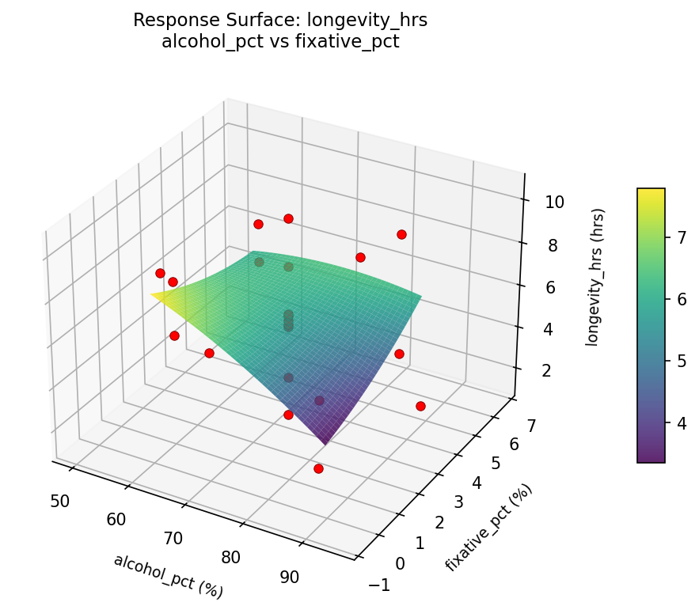
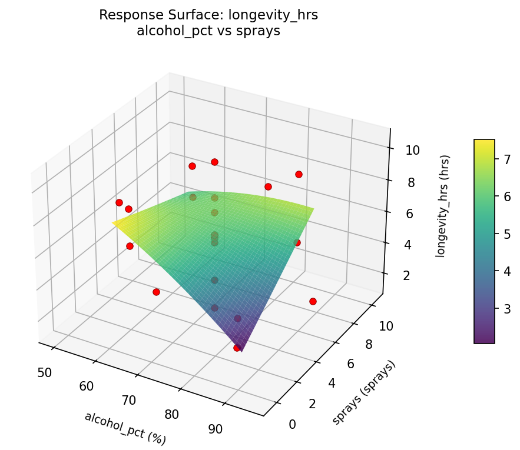
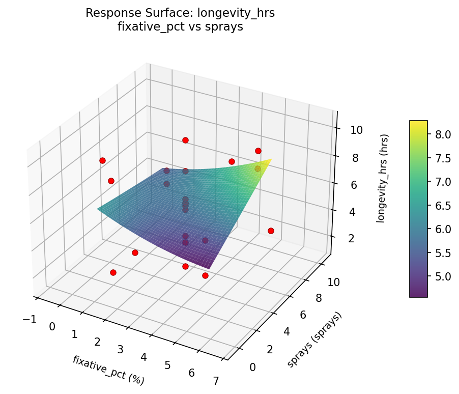
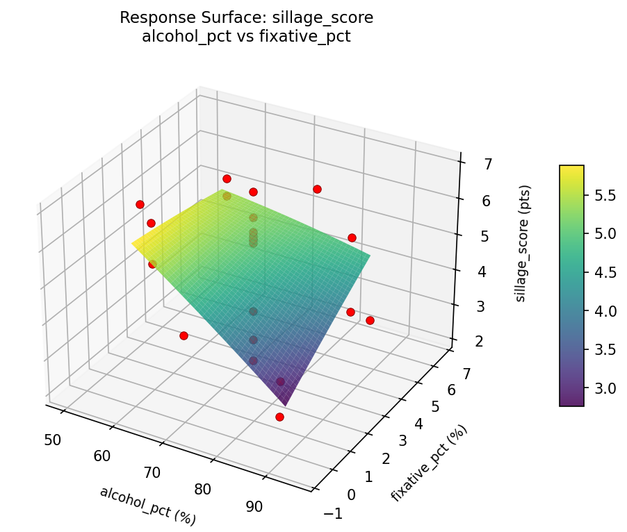
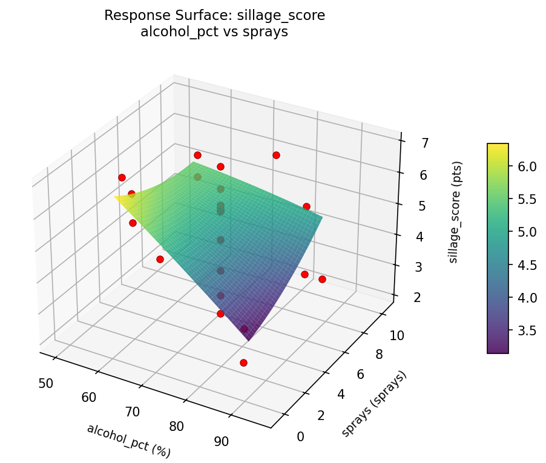

Summary
This experiment investigates perfume longevity & sillage. Central composite design to maximize scent longevity and sillage by tuning alcohol concentration, fixative percentage, and application amount.
The design varies 3 factors: alcohol pct (%), ranging from 60 to 85, fixative pct (%), ranging from 1 to 5, and sprays (sprays), ranging from 2 to 8. The goal is to optimize 2 responses: longevity hrs (hrs) (maximize) and sillage score (pts) (maximize). Fixed conditions held constant across all runs include fragrance type = eau_de_parfum, notes = oriental.
A Central Composite Design (CCD) was selected to fit a full quadratic response surface model, including curvature and interaction effects. With 3 factors this produces 22 runs including center points and axial (star) points that extend beyond the factorial range.
Quadratic response surface models were fitted to capture potential curvature and factor interactions. The RSM contour plots below visualize how pairs of factors jointly affect each response.
Key Findings
For longevity hrs, the most influential factors were sprays (42.3%), alcohol pct (30.8%), fixative pct (26.9%). The best observed value was 10.5 (at alcohol pct = 72.5, fixative pct = -0.651484, sprays = 5).
For sillage score, the most influential factors were sprays (45.6%), alcohol pct (39.7%), fixative pct (14.8%). The best observed value was 6.9 (at alcohol pct = 72.5, fixative pct = -0.651484, sprays = 5).
Recommended Next Steps
- Run confirmation experiments at the predicted optimal settings to validate the model.
- Consider whether any fixed factors should be varied in a future study.
Experimental Setup
Factors
| Factor | Low | High | Unit |
|---|
alcohol_pct | 60 | 85 | % |
fixative_pct | 1 | 5 | % |
sprays | 2 | 8 | sprays |
Fixed: fragrance_type = eau_de_parfum, notes = oriental
Responses
| Response | Direction | Unit |
|---|
longevity_hrs | ↑ maximize | hrs |
sillage_score | ↑ maximize | pts |
Configuration
{
"metadata": {
"name": "Perfume Longevity & Sillage",
"description": "Central composite design to maximize scent longevity and sillage by tuning alcohol concentration, fixative percentage, and application amount"
},
"factors": [
{
"name": "alcohol_pct",
"levels": [
"60",
"85"
],
"type": "continuous",
"unit": "%"
},
{
"name": "fixative_pct",
"levels": [
"1",
"5"
],
"type": "continuous",
"unit": "%"
},
{
"name": "sprays",
"levels": [
"2",
"8"
],
"type": "continuous",
"unit": "sprays"
}
],
"fixed_factors": {
"fragrance_type": "eau_de_parfum",
"notes": "oriental"
},
"responses": [
{
"name": "longevity_hrs",
"optimize": "maximize",
"unit": "hrs"
},
{
"name": "sillage_score",
"optimize": "maximize",
"unit": "pts"
}
],
"settings": {
"operation": "central_composite",
"test_script": "use_cases/224_perfume_longevity/sim.sh"
}
}
Experimental Matrix
The Central Composite Design produces 22 runs. Each row is one experiment with specific factor settings.
| Run | alcohol_pct | fixative_pct | sprays |
|---|
| 1 | 72.5 | 3 | 5 |
| 2 | 85 | 1 | 8 |
| 3 | 60 | 5 | 2 |
| 4 | 72.5 | 6.65148 | 5 |
| 5 | 72.5 | 3 | 5 |
| 6 | 49.6782 | 3 | 5 |
| 7 | 72.5 | 3 | -0.477226 |
| 8 | 72.5 | 3 | 5 |
| 9 | 85 | 5 | 2 |
| 10 | 95.3218 | 3 | 5 |
| 11 | 72.5 | 3 | 5 |
| 12 | 72.5 | -0.651484 | 5 |
| 13 | 72.5 | 3 | 5 |
| 14 | 60 | 1 | 8 |
| 15 | 72.5 | 3 | 5 |
| 16 | 85 | 1 | 2 |
| 17 | 72.5 | 3 | 10.4772 |
| 18 | 85 | 5 | 8 |
| 19 | 72.5 | 3 | 5 |
| 20 | 60 | 1 | 2 |
| 21 | 60 | 5 | 8 |
| 22 | 72.5 | 3 | 5 |
Step-by-Step Workflow
1
Preview the design
$ python doe.py info --config use_cases/224_perfume_longevity/config.json
2
Generate the runner script
$ python doe.py generate --config use_cases/224_perfume_longevity/config.json \
--output use_cases/224_perfume_longevity/results/run.sh --seed 42
3
Execute the experiments
$ bash use_cases/224_perfume_longevity/results/run.sh
4
Analyze results
$ python doe.py analyze --config use_cases/224_perfume_longevity/config.json
5
Get optimization recommendations
$ python doe.py optimize --config use_cases/224_perfume_longevity/config.json
6
Multi-objective optimization
With 2 competing responses, use --multi to find the best compromise via Derringer–Suich desirability.
$ python doe.py optimize --config use_cases/224_perfume_longevity/config.json --multi
7
Generate the HTML report
$ python doe.py report --config use_cases/224_perfume_longevity/config.json \
--output use_cases/224_perfume_longevity/results/report.html
Features Exercised
| Feature | Value |
|---|
| Design type | central_composite |
| Factor types | continuous (all 3) |
| Arg style | double-dash |
| Responses | 2 (longevity_hrs ↑, sillage_score ↑) |
| Total runs | 22 |
Analysis Results
Generated from actual experiment runs using the DOE Helper Tool.
Response: longevity_hrs
Top factors: sprays (42.3%), alcohol_pct (30.8%), fixative_pct (26.9%).
ANOVA
| Source | DF | SS | MS | F | p-value |
|---|
| Source | DF | SS | MS | F | p-value |
| alcohol_pct | 4 | 30.1370 | 7.5342 | 2.857 | 0.0880 |
| fixative_pct | 4 | 27.8061 | 6.9515 | 2.636 | 0.1046 |
| sprays | 4 | 37.2620 | 9.3155 | 3.533 | 0.0536 |
| Lack | of | Fit | 2 | 0.0000 | 0.0000 |
| Pure | Error | 7 | 18.4588 | | |
| Error | 9 | 13.7186 | 2.6370 | | |
| Total | 21 | 108.9236 | 5.1868 | | |
Pareto Chart

Main Effects Plot

Normal Probability Plot of Effects

Half-Normal Plot of Effects

Model Diagnostics

Response: sillage_score
Top factors: sprays (45.6%), alcohol_pct (39.7%), fixative_pct (14.8%).
ANOVA
| Source | DF | SS | MS | F | p-value |
|---|
| Source | DF | SS | MS | F | p-value |
| alcohol_pct | 4 | 13.6265 | 3.4066 | 1.696 | 0.2342 |
| fixative_pct | 4 | 4.7165 | 1.1791 | 0.587 | 0.6803 |
| sprays | 4 | 9.3365 | 2.3341 | 1.162 | 0.3888 |
| Lack | of | Fit | 2 | 0.0000 | 0.0000 |
| Pure | Error | 7 | 14.0587 | | |
| Error | 9 | 13.7136 | 2.0084 | | |
| Total | 21 | 41.3932 | 1.9711 | | |
Pareto Chart

Main Effects Plot

Normal Probability Plot of Effects

Half-Normal Plot of Effects

Model Diagnostics

Response Surface Plots
3D surfaces fitted with quadratic RSM. Red dots are observed data points.
longevity hrs alcohol pct vs fixative pct

longevity hrs alcohol pct vs sprays

longevity hrs fixative pct vs sprays

sillage score alcohol pct vs fixative pct

sillage score alcohol pct vs sprays

sillage score fixative pct vs sprays

Multi-Objective Optimization
When responses compete, Derringer–Suich desirability finds the best compromise.
Each response is scaled to a 0–1 desirability, then combined via a weighted geometric mean.
Overall Desirability
D = 0.9545
Per-Response Desirability
| Response | Weight | Desirability | Predicted | Dir |
|---|
longevity_hrs |
1.0 |
|
10.50 0.9545 10.50 hrs |
↑ |
sillage_score |
1.5 |
|
6.90 0.9545 6.90 pts |
↑ |
Recommended Settings
| Factor | Value |
|---|
alcohol_pct | 72.5 % |
fixative_pct | 3 % |
sprays | 5 sprays |
Source: from observed run #21
Trade-off Summary
Sacrifice = how much worse than single-objective best.
| Response | Predicted | Best Observed | Sacrifice |
|---|
sillage_score | 6.90 | 6.90 | +0.00 |
Top 3 Runs by Desirability
| Run | D | Factor Settings |
|---|
| #17 | 0.8085 | alcohol_pct=72.5, fixative_pct=3, sprays=5 |
| #18 | 0.7869 | alcohol_pct=72.5, fixative_pct=3, sprays=-0.477226 |
Model Quality
| Response | R² | Type |
|---|
sillage_score | 0.1757 | linear |
Full Multi-Objective Output
============================================================
MULTI-OBJECTIVE OPTIMIZATION
Method: Derringer-Suich Desirability Function
============================================================
Overall desirability: D = 0.9545
Response Weight Desirability Predicted Direction
---------------------------------------------------------------------
longevity_hrs 1.0 0.9545 10.50 hrs ↑
sillage_score 1.5 0.9545 6.90 pts ↑
Recommended settings:
alcohol_pct = 72.5 %
fixative_pct = 3 %
sprays = 5 sprays
(from observed run #21)
Trade-off summary:
longevity_hrs: 10.50 (best observed: 10.50, sacrifice: +0.00)
sillage_score: 6.90 (best observed: 6.90, sacrifice: +0.00)
Model quality:
longevity_hrs: R² = 0.0804 (linear)
sillage_score: R² = 0.1757 (linear)
Top 3 observed runs by overall desirability:
1. Run #21 (D=0.9545): alcohol_pct=72.5, fixative_pct=3, sprays=5
2. Run #17 (D=0.8085): alcohol_pct=72.5, fixative_pct=3, sprays=5
3. Run #18 (D=0.7869): alcohol_pct=72.5, fixative_pct=3, sprays=-0.477226
Full Analysis Output
=== Main Effects: longevity_hrs ===
Factor Effect Std Error % Contribution
--------------------------------------------------------------
sprays 6.3250 0.4856 42.3%
alcohol_pct 4.6000 0.4856 30.8%
fixative_pct 4.0250 0.4856 26.9%
=== ANOVA Table: longevity_hrs ===
Source DF SS MS F p-value
-----------------------------------------------------------------------------
alcohol_pct 4 30.1370 7.5342 2.857 0.0880
fixative_pct 4 27.8061 6.9515 2.636 0.1046
sprays 4 37.2620 9.3155 3.533 0.0536
Lack of Fit 2 0.0000 0.0000 0.000 1.0000
Pure Error 7 18.4588 2.6370
Error 9 13.7186 2.6370
Total 21 108.9236 5.1868
=== Summary Statistics: longevity_hrs ===
alcohol_pct:
Level N Mean Std Min Max
------------------------------------------------------------
49.6782 1 6.3000 0.0000 6.3000 6.3000
60 4 5.0500 2.6262 1.3000 7.4000
72.5 12 5.4833 2.0652 1.6000 9.1000
85 4 8.1000 1.9305 5.8000 10.5000
95.3218 1 3.5000 0.0000 3.5000 3.5000
fixative_pct:
Level N Mean Std Min Max
------------------------------------------------------------
-0.651484 1 5.6000 0.0000 5.6000 5.6000
1 4 7.4250 2.1701 5.8000 10.5000
3 12 5.0750 1.8197 1.6000 8.3000
5 4 5.7250 3.1920 1.3000 8.3000
6.65148 1 9.1000 0.0000 9.1000 9.1000
sprays:
Level N Mean Std Min Max
------------------------------------------------------------
-0.477226 1 6.0000 0.0000 6.0000 6.0000
10.4772 1 1.6000 0.0000 1.6000 1.6000
2 4 5.2250 2.7669 1.3000 7.8000
5 12 5.6667 1.8032 3.1000 9.1000
8 4 7.9250 2.0759 5.5000 10.5000
=== Main Effects: sillage_score ===
Factor Effect Std Error % Contribution
--------------------------------------------------------------
sprays 3.5000 0.2993 45.6%
alcohol_pct 3.0500 0.2993 39.7%
fixative_pct 1.1333 0.2993 14.8%
=== ANOVA Table: sillage_score ===
Source DF SS MS F p-value
-----------------------------------------------------------------------------
alcohol_pct 4 13.6265 3.4066 1.696 0.2342
fixative_pct 4 4.7165 1.1791 0.587 0.6803
sprays 4 9.3365 2.3341 1.162 0.3888
Lack of Fit 2 0.0000 0.0000 0.000 1.0000
Pure Error 7 14.0587 2.0084
Error 9 13.7136 2.0084
Total 21 41.3932 1.9711
=== Summary Statistics: sillage_score ===
alcohol_pct:
Level N Mean Std Min Max
------------------------------------------------------------
49.6782 1 5.7000 0.0000 5.7000 5.7000
60 4 4.1250 1.1758 2.8000 5.5000
72.5 12 4.7083 1.4400 2.1000 6.2000
85 4 6.2500 0.5196 5.7000 6.9000
95.3218 1 3.2000 0.0000 3.2000 3.2000
fixative_pct:
Level N Mean Std Min Max
------------------------------------------------------------
-0.651484 1 5.6000 0.0000 5.6000 5.6000
1 4 5.6750 0.9465 4.6000 6.9000
3 12 4.5417 1.4951 2.1000 6.2000
5 4 4.7000 1.7701 2.8000 6.4000
6.65148 1 5.3000 0.0000 5.3000 5.3000
sprays:
Level N Mean Std Min Max
------------------------------------------------------------
-0.477226 1 5.6000 0.0000 5.6000 5.6000
10.4772 1 2.1000 0.0000 2.1000 2.1000
2 4 5.0000 1.4810 2.8000 6.0000
5 12 4.8083 1.2916 2.2000 6.2000
8 4 5.3750 1.5414 3.6000 6.9000
Optimization Recommendations
=== Optimization: longevity_hrs ===
Direction: maximize
Best observed run: #21
alcohol_pct = 72.5
fixative_pct = -0.651484
sprays = 5
Value: 10.5
RSM Model (linear, R² = 0.3516, Adj R² = 0.2436):
Coefficients:
intercept +5.8273
alcohol_pct +0.7843
fixative_pct -0.5602
sprays -1.2971
RSM Model (quadratic, R² = 0.7002, Adj R² = 0.4754):
Coefficients:
intercept +6.0325
alcohol_pct +0.7843
fixative_pct -0.5602
sprays -1.2971
alcohol_pct*fixative_pct -1.2500
alcohol_pct*sprays -0.0000
fixative_pct*sprays +0.6250
alcohol_pct^2 -0.8376
fixative_pct^2 +0.5574
sprays^2 -0.0276
Curvature analysis:
alcohol_pct coef=-0.8376 concave (has a maximum)
fixative_pct coef=+0.5574 convex (has a minimum)
sprays coef=-0.0276 negligible curvature
Notable interactions:
alcohol_pct*fixative_pct coef=-1.2500 (antagonistic)
fixative_pct*sprays coef=+0.6250 (synergistic)
Predicted optimum (from quadratic model, at observed points):
alcohol_pct = 85
fixative_pct = 1
sprays = 2
Predicted value: 10.2412
Surface optimum (via L-BFGS-B, quadratic model):
alcohol_pct = 85
fixative_pct = 1
sprays = 2
Predicted value: 10.2412
Model quality: Good fit — general trends are captured, some noise remains.
Factor importance:
1. sprays (effect: 5.6, contribution: 36.0%)
2. fixative_pct (effect: 5.1, contribution: 32.7%)
3. alcohol_pct (effect: 4.9, contribution: 31.3%)
=== Optimization: sillage_score ===
Direction: maximize
Best observed run: #21
alcohol_pct = 72.5
fixative_pct = -0.651484
sprays = 5
Value: 6.9
RSM Model (linear, R² = 0.2551, Adj R² = 0.1310):
Coefficients:
intercept +4.8591
alcohol_pct +0.6198
fixative_pct -0.1141
sprays -0.5682
RSM Model (quadratic, R² = 0.5307, Adj R² = 0.1786):
Coefficients:
intercept +4.5841
alcohol_pct +0.6198
fixative_pct -0.1141
sprays -0.5682
alcohol_pct*fixative_pct -0.6375
alcohol_pct*sprays +0.0625
fixative_pct*sprays +0.2625
alcohol_pct^2 -0.1425
fixative_pct^2 +0.5775
sprays^2 -0.0225
Curvature analysis:
fixative_pct coef=+0.5775 convex (has a minimum)
alcohol_pct coef=-0.1425 concave (has a maximum)
sprays coef=-0.0225 negligible curvature
Notable interactions:
alcohol_pct*fixative_pct coef=-0.6375 (antagonistic)
Predicted optimum (from quadratic model, at observed points):
alcohol_pct = 85
fixative_pct = 1
sprays = 2
Predicted value: 7.1362
Surface optimum (via L-BFGS-B, quadratic model):
alcohol_pct = 85
fixative_pct = 1
sprays = 2
Predicted value: 7.1362
Model quality: Moderate fit — use predictions directionally, not precisely.
Factor importance:
1. alcohol_pct (effect: 3.5, contribution: 40.8%)
2. sprays (effect: 2.6, contribution: 30.0%)
3. fixative_pct (effect: 2.5, contribution: 29.2%)